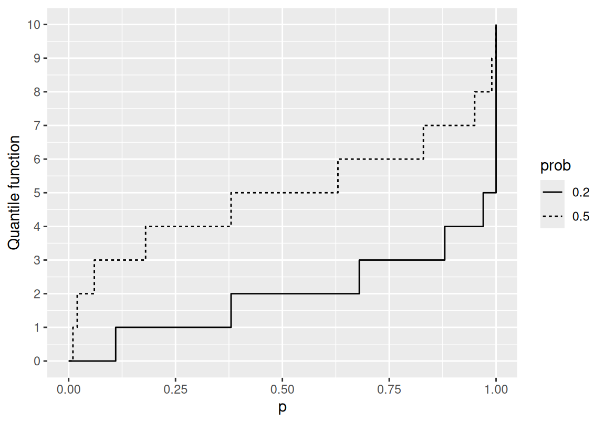
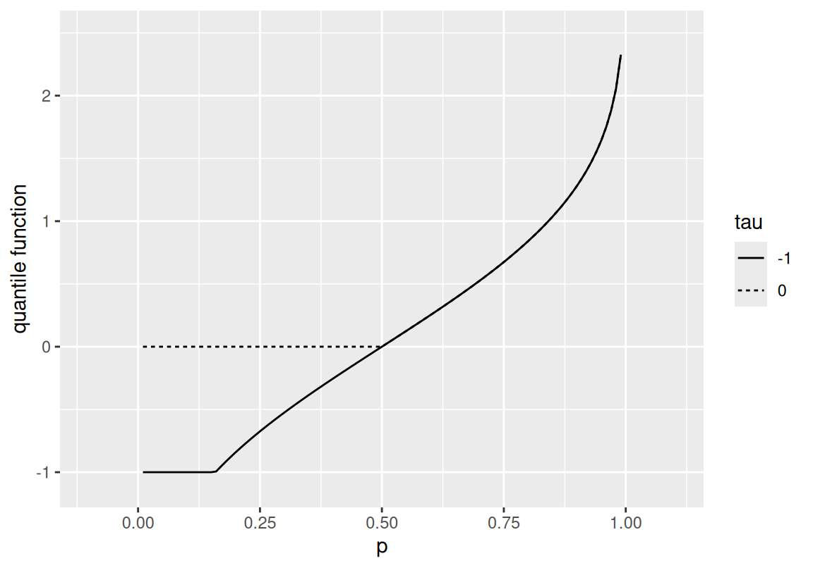
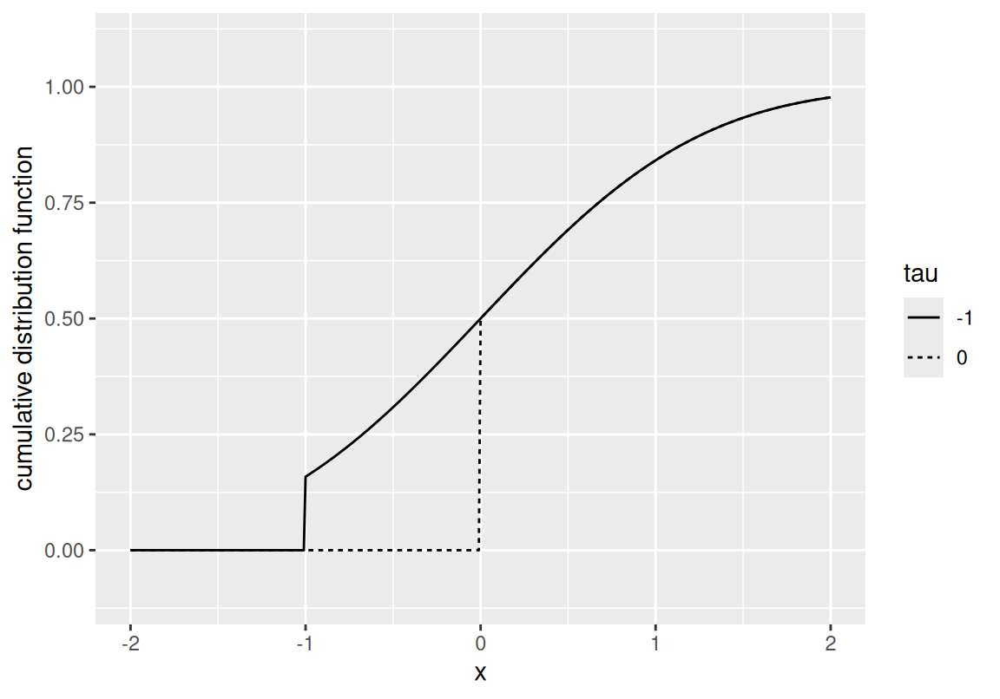
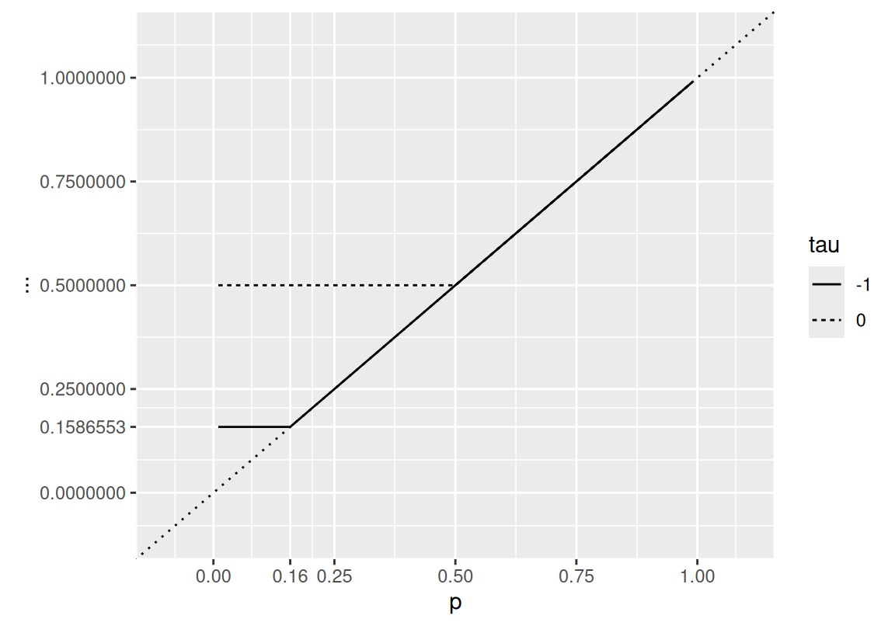
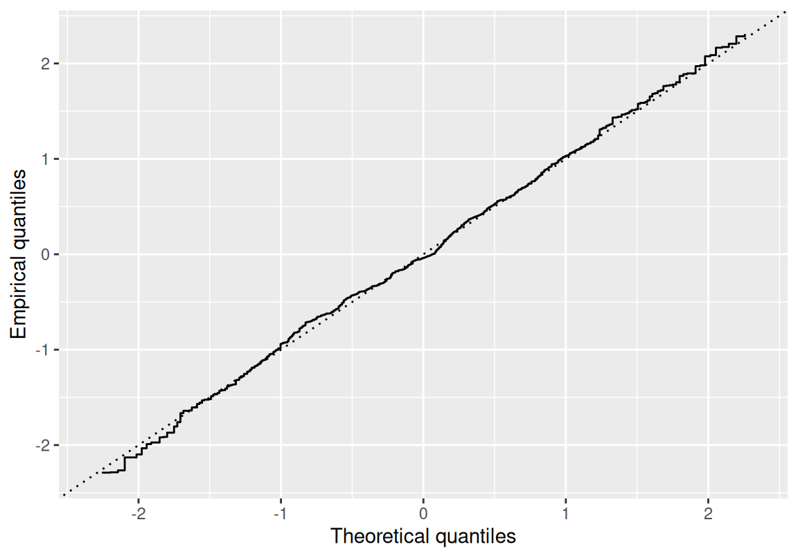
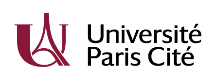

Quantile functions
Stéphane Boucheron
2026-10-18
One more characterization
So far we have seen several characterizations of probability distributions:
Cumulative distribution functions
Probability generating functions
Characteristic functions
For univariate distributions, a companion to the cumulative distribution function is the quantile function.
Quantile functions of discrete distributions
The quantile transformation has many applications. It can be used to show stochastic domination properties.
Example 1 (Discrete and mixed distributions) The quantile function of a discrete distribution is a step function that jumps at the cumulative probability of every possible outcome.
If a probability distribution is a mixture of a discrete distribution and a continuous distribution, the quantile function jumps at the cumulative probability of every possible outcome of the discrete component.
Quantile functions of binomial distributions
Quantile functions of Binomial distributions with parameters \(n=10\) and \(p \in \{.2, .5\}\).
The two quantile functions have the same range: \(\{0, 1, \ldots, 10\}\).
Quantile functions of mixed distributions
Quantile functions of clipped Gaussians

Quantile functions of
\[\max(X, \tau) \text{ where } X \sim \mathcal{N}(0,1)\]
for \(\tau \in \{0, -1\}\).
The quantile function of \(\max(X,\tau)\) is
\[\mathbb{I}_{(0,\Phi(\tau))}(p) \times \tau + \Phi^{\leftarrow}(p) \times \mathbb{I}_{(\Phi(\tau), 1)}(p)\]
or
\[\Phi^{\leftarrow}(p \vee \Phi(\tau))\]
The two distributions are neither absolutely continuous nor discrete.
Cumulative distribution functions of clipped Gaussians

Cumulative distribution functions for clipped Gaussian distributions.
Composition of the CDF and the quantile function

Representation of \(F \circ F^{\leftarrow}\) for the clipped Gaussian distributions.
The function \(F \circ F^{\leftarrow}\) always lies above the line \(y=x\) (dotted line) as prescribed in Proposition 1.
Plateaux that lie strictly above the dotted line are in correspondence with jumps of the quantile function.
Cumulative distribution functions
Definition 1 (Cumulative distribution function) A cumulative distribution function \(F\) is
non-negative
\([0,1]\)-valued
non-decreasing
right-continuous, with a left limit at any point.
Tip
The cumulative distribution function of a diffuse probability measure is continuous at any point.
Quantile function
The quantile function \(F^{\leftarrow}\) is defined as an extended inverse of the cumulative distribution function \(F\).
Definition 2 (Quantile function) The quantile function \(F^{\leftarrow}\) of a random variable \(X\) distributed according to \(P\) (with cumulative distribution function \(F\)) is defined as
\[\begin{array}{rl} F^{\leftarrow} (p) & = \inf \Big\{ x : P\{X \leq x\} \geq p \Big\} \\ & = \inf \Big\{ x : F (x) \geq p \Big\} \qquad \text{for } p \in (0,1). \end{array}\]
Elementary properties
Warning
The quantile function is non-decreasing and left-continuous.
Interplay between \(F\) and \(F^{\leftarrow}\)
The interplay between the quantile and cumulative distribution functions is summarized in the next proposition.
Proposition 1 (Quantile function and CDF) If \(F\) and \(F^\leftarrow\) are the CDF and the quantile function of (the distribution of) \(X\), the following statements hold for \(p \in\, ]0, 1[\):
\(p \leq F(x)\) iff \(F^\leftarrow(p) \leq x\)
\(F \circ F^\leftarrow(p) \geq p\)
\(F^\leftarrow \circ F(x) \leq x\)
If \(F ⊴ \text{Lebesgue}\), then \(F \circ F^\leftarrow(p) = p\)
Proof of the interplay
Proof. According to the definition of \(F^\leftarrow\), if \(F(x) \geq p\) then \(F^\leftarrow(p) \leq x\).
To prove the converse, it suffices to check that \(F \circ F^\leftarrow(p) \geq p\).
Indeed, if \(x \geq F^\leftarrow(p)\), as \(F\) is non-decreasing, \(F(x) \geq F \circ F^\leftarrow(p)\).
If \(y = F^\leftarrow(p)\), by definition of \(y = F^\leftarrow(p)\)
\(\exists (z_n)_{n \in \mathbb{N}}\) with \(z_n \searrow y\) such that \(F(z_n) \geq p\).
But as \(F\) is right-continuous, \(\lim_n F(z_n) = F(\lim_n z_n) = F(y)\).
Hence \(F(y) \geq p\).
We just proved 1. and 2.
Proof of the interplay, continued
Proof (continued).
- is an immediate consequence of 1.
Let \(p = F(x)\). Hence \(p \leq F(x)\), according to 1.
This is equivalent to \(F^\leftarrow(p) \leq x\), that is \(F^\leftarrow \circ F(x) \leq x\).
- For every \(p\) in \(]0, 1[\), \(\{ x : p = F(x)\}\) is non-empty (Mean value Theorem).
Let \(y = \inf \{ x : p = F(x)\} = F^\leftarrow(p)\).
According to 1., \(F(y) \geq p\).
Now, if \((z_n)_{n \in \mathbb{N}} \nearrow y\),
for every \(n\), \(F(z_n) < p\).
By left-continuity, \(F(y) = F(\lim_n \uparrow z_n) = \lim_n F(z_n) \leq p\).
Hence \(F(y) = p\), that is \(F \circ F^\leftarrow(p) = p\).
Quantile transformation
Proposition 2 (Quantile transformation) If \(U\) is uniformly distributed on \((0,1)\), and \(F\) is a cumulative distribution function over \(\mathbb{R}\), \(F^{\leftarrow}(U)\) has cumulative distribution function \(F\).
The quantile transformation works whatever the continuity properties of \(F\).
Proof of the quantile transformation
Proof. \[\begin{array}{rl} P\Big\{ F^\leftarrow(U) \leq x \Big\} & = P\Big\{ U \leq F(x) \Big\} \\ & = F(x) \, . \end{array}\]
QQ-plots

A popular device for comparing two probability distributions on the real line defined by their cumulative distribution functions \(F\) and \(G\).
The QQ-plot consists in plotting the function \(G^{\leftarrow} \circ F\).
If the two distributions are the same, the line
\[y = G^{\leftarrow} \circ F(x)\]
should lie below \(y=x\), according to Proposition 1.
The two lines should coincide if \(F=G\) is continuous and increasing.
Here:
\(F = \Phi\) is the cumulative distribution function of \(\mathcal{N}(0,1)\).
\(G\) is the empirical distribution of a sample of size \(500\) from \(\mathcal{N}(0,1)\).
Probability integral transform
Let us conclude this section with an important observation concerning the behaviour of \(F(X)\) when \(X \sim P\) with cumulative distribution function \(F\).
Corollary 1 (Probability integral transform) If \(X \sim P\) with continuous cumulative distribution function \(F\),
then
\(F(X)\) and \(1 - F(X)\) are uniformly distributed on \([0, 1]\).
Exercise 1 (Prove the corollary) Prove Corollary 1.


MA1AU015 – Probabilités et Extrêmes – M1 ISIFAR – UParis Cité